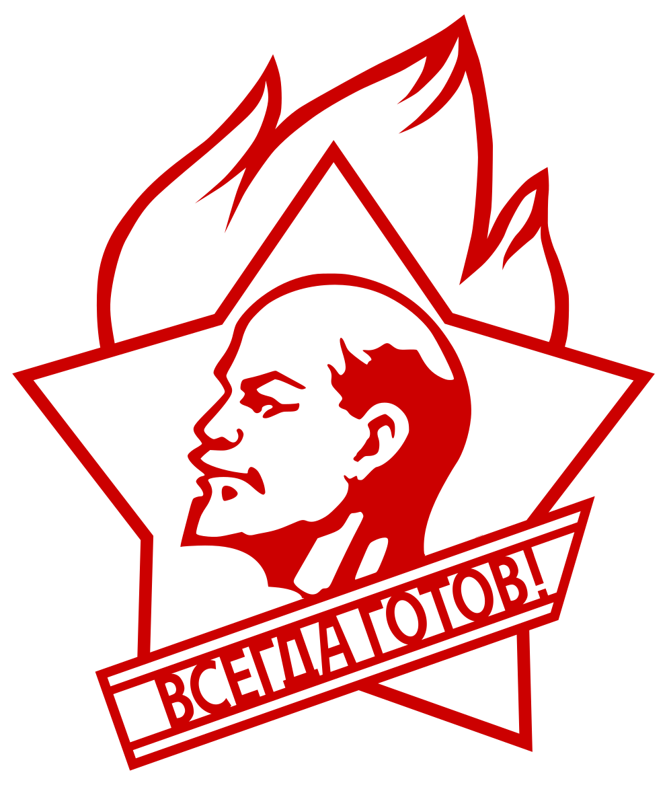

1831、1834
法国里昂工人起义
里昂是法国丝织业中心，工人受工场主和包买商残酷剥削，生活困苦。1831年起义主要要求提高工价；1834年起义提出废除君主制度、建立共和政体，具有更鲜明的政治性质。两次起义均被政府军镇压，但标志着法国无产阶级作为独立政治力量登上历史舞台。
全世界无产者，联合起来！
这一类运动集中呈现人民群众直接进入历史舞台的时刻：工人政权、总罢工、街垒、委员会，以及学生与工人运动之间的关系。
里昂是法国丝织业中心，工人受工场主和包买商残酷剥削，生活困苦。1831年起义主要要求提高工价；1834年起义提出废除君主制度、建立共和政体，具有更鲜明的政治性质。两次起义均被政府军镇压，但标志着法国无产阶级作为独立政治力量登上历史舞台。
英国工业革命后，工人虽经济上受剥削，政治上却无选举权，被排斥在议会之外。工人阶级以《人民宪章》为纲领，要求年满21岁男子普选权、秘密投票、废除议员财产资格限制等政治改革。结果：三次向国会请愿均被拒绝，运动最终失败。
西里西亚地区纺织工人受工场主、包买商和地主多重剥削，生活极端贫困。斗争以争取提高工资为导火线，起义者集中打击工厂主，提出改善生存条件的诉求。最后起义被政府军镇压，但推动了德国其他地区工人运动的发展。
1848年欧洲革命浪潮使工人、城市贫民和民主派群众大规模进入政治舞台。它虽然还没有形成成熟的无产阶级政权形式，但已经显示出资本主义社会内部阶级矛盾的爆发力量。
1868年3月，日内瓦建筑工人要求加薪20%并缩短工时遭拒后罢工。第一国际总委员会通过日内瓦支部组织全欧募捐，粉碎了资本家从英、法、意招募工贼的企图，迫使资方在4月作出全面让步。
巴黎公社是无产阶级第一次夺取政权的伟大尝试。它留下的核心问题是：工人阶级不能简单接管旧国家机器，而必须创造能够接受群众监督的新型政权形式。
1877年7月，因铁路公司在一年内三次大幅削减工资，美国爆发了历史上第一次波及多州的全国性铁路工人大罢工。资本家迅速动用国民警卫队甚至联邦军队大规模武装镇压，在多个城市造成了流血冲突。
弗拉基米尔省莫罗佐夫工厂的8000名工人因不堪残酷剥削而罢工。这次罢工显著特征在于工人们开始提出自己的政治诉求，不再局限于单纯的经济要求，标志着俄国无产阶级已开始摆脱自发状态，作为一支自觉的阶级力量登上历史舞台。
1886年5月1日，全美数十万工人为争取八小时工作制发动总罢工。5月4日，在芝加哥干草市场广场，混入警察的挑衅者投掷爆炸物，警方趁机向和平集会的人群开枪，制造了震惊世界的屠杀惨案。1889年，第二国际将5月1日定为国际劳工节，永久纪念芝加哥工人的牺牲。
全球回响：1890年5月1日，英、法、德、奥、意、西、比、荷、美等国的工人纷纷举行大规模示威和集会。这标志着工人运动从一国抗争走向了全球联动。
1905年俄国革命中，罢工、街垒和工人代表苏维埃开始出现。苏维埃作为群众斗争中产生的政治组织形式，为后来的十月革命提供了重要经验。
德国革命暴露了工人委员会运动、社会民主党机会主义和革命领导权之间的尖锐矛盾。它说明群众高涨如果没有清晰的革命路线，很容易被旧秩序重新吸收。
匈牙利苏维埃共和国是第一次世界大战后欧洲革命浪潮中的重要政权尝试。它显示出战争危机能够激发群众革命，但也暴露了新生政权在阶级基础、军事压力和国际孤立中的脆弱性。
意大利红色两年中，工厂占领、工厂委员会和农民斗争广泛发展。它表现出群众对资本主义生产秩序的直接冲击，也说明没有革命领导权时，群众斗争可能被议会主义和改良主义消解。
阿斯图里亚斯矿工起义集中体现了工人阶级武装反抗反动势力的力量。矿工群众在地方范围内建立斗争秩序，显示出无产阶级在危机中可能迅速走向武装和政权问题。
西班牙革命中，工人、农民和民兵群众在反法西斯斗争中推动工厂、土地和地方权力的改造。它的复杂性在于群众革命力量、统一战线策略和不同阶级路线之间的矛盾交织在一起。
1968年5月，法国爆发学生运动与工人总罢工相互激荡的大规模社会风潮。学生因教育体制僵化发起抗议，5月10日“街垒之夜”与警方冲突后引发全国声援，随即爆发数百万人参与的总罢工。政府最终以军警镇压、解散左翼组织、解散议会重新选举等手段平息了局面。
意大利“热秋”中，工人罢工、工厂斗争和学生运动相互激荡，冲击了战后资本主义生产秩序。它说明发达资本主义国家内部仍然存在尖锐的劳动控制和阶级对抗问题。
葡萄牙革命中，士兵、工人和群众组织共同推动旧殖民法西斯政权瓦解，并出现工厂占领、土地斗争和基层委员会。它说明军队危机、殖民战争失败和群众运动结合时，旧国家机器会迅速动摇。
共产主义运动不是自发愤怒与斗争的集合。理论、纲领、组织纪律和国际联合，是无产阶级从受压迫状态走向自觉革命力量的条件。
共产主义者同盟标志着早期共产主义组织开始从秘密团体形态，转向以科学理论和无产阶级纲领为基础的革命组织。它提出“全世界无产者，联合起来！”的口号，使共产主义运动开始具有明确的阶级方向。
第一国际把不同国家的工人运动联系起来，使无产阶级斗争突破单一国家边界。它说明资本主义已经国际化，工人阶级也必须以国际联合回应资本的全球压迫。
1872年9月的海牙大会，将分裂国际的巴枯宁无政府主义者开除出第一国际，粉碎了他们以“绝对自由”和“废除一切国家”为纲取消无产阶级专政的企图。
1875年，爱森纳赫派为急于实现组织合并，在《哥达纲领》中向拉萨尔主义的错误理论作出了重大原则让步。马克思为此抱病写下著名的《哥达纲领批判》，深刻批判了拉萨尔主义的谬论。
在盖得和拉法格领导下，法国工人党在马赛宣布成立。次年，马克思亲自为其党纲起草了理论性导言，开篇即写下“工人阶级的解放应当是工人阶级自己的事情”的经典论断。
1882年圣艾蒂安大会上，法国工人党的马克思主义者（盖得派）与以布鲁斯为首的可能派彻底分裂。后者主张放弃革命目标，背叛了马克思主义基本原则。
普列汉诺夫在日内瓦创立的劳动解放社，是俄国历史上第一个马克思主义团体。它翻译出版了《共产党宣言》《雇佣劳动与资本》等著作，并与俄国民粹派错误思想进行坚决斗争。
第二国际推动了工人政党和群众组织的发展，但也逐渐暴露出议会主义、合法主义和机会主义倾向。它的历史教训在于：组织扩大并不等于革命路线巩固。
在坚持马克思主义革命原则的前提下，此次大会将无政府主义者正式驱逐出第二国际，巩固了马克思主义在国际社会党中的主导地位。
1898年3月，俄国各地代表在明斯克秘密召开大会，正式宣告“俄国社会民主工党”成立。由于会后9名与会人员有8人在一个月内被逮捕（包括全部3名中央委员会成员），因此本次会议并未真正具有可以执行会议决议的政党常设机构。
德国社会民主党人伯恩施坦出版《社会主义的前提和社会民主党的任务》一书，对马克思主义提出全面“修正”。他公开声称“最终目的是微不足道的，运动就是一切”，公然否认资本主义必然灭亡、社会主义必然胜利的历史规律，反对无产阶级革命和无产阶级专政。
围绕党员条件、组织纪律和革命党性质的分歧，形成列宁主义建党理论的重要起点。这个问题本质上是无产阶级革命如何突破自发性的限制，建立能够领导夺权斗争的新型政党。
布尔什维克在同机会主义和调和主义的斗争中进一步巩固独立组织路线。它说明革命党不能只是松散派别联盟，而必须在纲领、纪律和实践方向上形成统一的无产阶级政治力量。
共产国际试图把各国共产党组织到世界革命战略之中，同时也提出了国际统一路线如何同各国具体条件结合的问题。它把无产阶级国际主义从口号推进到组织形态。
共产国际二大提出加入共产国际的条件，要求各国共产党同改良主义、社会沙文主义和中派机会主义划清界限。这体现了革命组织不能只看名称，而必须看纲领、纪律和实际路线。
中国共产党成立，标志着马克思列宁主义开始同中国革命的具体实际结合。它使中国工人阶级开始拥有自己的政治先锋队，并为后来探索新民主主义革命道路奠定组织基础。
共产国际七大在法西斯威胁上升的条件下提出反法西斯统一战线问题。它的重要矛盾在于：革命力量必须争取广泛群众和同盟者，但又不能在统一战线中丧失无产阶级独立领导权。
共产国际解散标志着早期世界革命集中组织形态的结束。此后，各国共产党必须更加独立地把马克思列宁主义同本国阶级结构、民族矛盾和革命条件结合起来。
二十世纪六十年代，国际共产主义运动围绕修正主义、和平过渡、阶级斗争是否继续和资本主义复辟问题发生深刻分裂。许多革命者开始重新组织反修力量，重建以革命路线为基础的共产党。
被压迫民族的解放是世界革命的重要组成部分。但反帝斗争不能停留在抽象民族主义中，必须同劳动群众解放和共产党领导相结合。
复活节起义是被压迫民族反抗帝国主义统治的重要事件。它说明民族解放斗争可以动摇帝国主义中心的统治链条，但也必须面对阶级领导权问题：民族独立不能自动等于劳动群众解放。
三一运动是朝鲜人民反抗日本殖民统治的大规模民族运动。它表现出殖民压迫下群众政治觉醒的力量，也说明被压迫民族的斗争需要从民族抗议进一步走向有组织的革命路线。
中国大革命时期，工人罢工、农民运动和反帝斗争相互结合，集中表现了半殖民地社会中民族矛盾与阶级矛盾的交织。它的重要教训是：反帝斗争必须坚持无产阶级独立领导权。
西班牙内战把反法西斯斗争、工人运动、农民土地问题和国际主义支援汇聚在一起。国际纵队的出现说明反帝反法西斯斗争不是单一民族事件，而是世界革命力量共同面对的问题。
越南人民在共产党领导下击败法国殖民主义，奠边府胜利沉重打击了旧殖民体系。它说明殖民地人民可以依靠群众动员、武装斗争和长期战略，打破帝国主义军事优势。
中国革命把反帝、反封建、土地革命和无产阶级领导结合起来，形成新民主主义革命道路。它说明被压迫民族的解放不能停留在资产阶级民族国家形式中，而必须同劳动群众的政治解放结合。
1953年7月26日，卡斯特罗等革命青年进攻蒙卡达兵营，虽然军事上失败，却揭开了古巴革命的新阶段。它说明在亲美独裁和半殖民地依附结构下，合法道路已经无法解决古巴人民的根本问题，革命力量必须以更坚决的方式打开斗争局面。
阿尔及利亚战争是反法国殖民统治的重大民族解放斗争。它揭露了帝国主义所谓“文明”的暴力本质，也说明民族解放运动内部仍然存在阶级路线和独立后社会方向的问题。
卡斯特罗、切·格瓦拉等人乘“格拉玛号”返回古巴后，在马埃斯特腊山区开展游击战争，逐步把反独裁斗争、农民问题和群众动员结合起来。这一过程显示出拉美反帝革命中农村游击战争的巨大影响，也暴露出古巴道路在无产阶级政党建设和长期继续革命理论上的局限。
古巴革命打击了美帝国主义在拉美的统治体系。它的重要意义在于说明反帝民族解放运动可以冲破旧秩序，并在群众动员和革命政权建设中向社会主义方向发展。
安哥拉、莫桑比克、几内亚比绍等地的解放战争，沉重打击了葡萄牙殖民体系。它们说明非洲反殖民斗争不仅是民族独立问题，也涉及土地、群众组织、武装斗争和革命政权方向。
1961年，美国扶植的古巴流亡反革命武装在猪湾登陆，企图推翻古巴革命政权，最终被古巴人民击败。它说明帝国主义不会容忍自己后院出现独立的反帝政权，也说明小国革命只要依靠群众、保持政治动员和武装准备，就能够粉碎强权干涉。
越南抗美战争是二十世纪反帝斗争的重大胜利。它证明帝国主义军事机器并非不可战胜，只要共产党领导、人民战争、民族解放和国际主义支援结合起来，就能够长期消耗并击败强敌。
哈瓦那三大洲会议把亚洲、非洲、拉丁美洲的反帝力量联结起来，使古巴成为第三世界革命运动的重要声援中心。它的意义在于把民族解放、反殖民斗争和反美帝斗争联系成国际战线，显示出亚非拉被压迫人民在世界革命中的战略地位。
切·格瓦拉在玻利维亚开展游击斗争，试图把古巴革命经验推广到拉丁美洲大陆。它表现了彻底反帝的国际主义精神，也留下重要教训：革命不能只靠少数先锋的英雄行动，必须同本国阶级结构、群众基础、土地问题和无产阶级政党建设结合起来。
阿连德领导的人民团结政府试图通过选举道路推进社会改革和反帝政策，但在资产阶级国家机器、军队系统、帝国主义干涉和国内反动阶级联合压力下遭到血腥推翻。智利的教训说明，旧国家机器不可能中立，无产阶级不能把革命命运寄托在议会道路和资产阶级宪政形式上。
格林纳达新宝石运动推翻旧政权，建立人民革命政府，成为加勒比地区反帝和社会主义取向运动的重要尝试。它说明小国革命同样能够震动帝国主义体系，但也暴露出革命政权内部路线、组织、群众监督和外部军事压力之间的尖锐矛盾。
桑地诺革命推翻亲美独裁统治，成为拉美反帝斗争的重要节点。它说明在帝国主义后院，被压迫人民仍然能够通过群众动员和武装斗争打开政治局面，但也必须面对革命胜利后的阶级路线和外部围困问题。
桑卡拉领导布基纳法索开展反帝、反腐败、妇女解放、土地改革和自力更生建设，成为非洲革命民族主义与社会主义倾向结合的重要实践。它的历史意义在于揭示非洲解放不能停留在形式独立，而必须触及帝国主义依附、旧官僚结构和国内剥削关系。
在半殖民地半封建社会中，革命常常不可能复制欧洲城市起义模式。农村、土地、根据地和长期人民战争成为理解这一类运动的关键。
秋收起义后，中国革命开始从城市中心起义的失败中转向农村根据地道路。井冈山斗争说明，半殖民地半封建社会的革命必须把土地问题、农民群众和武装斗争结合起来。
中国革命在长期斗争中形成农村包围城市、武装夺取政权和群众路线相结合的道路，把马克思列宁主义同半殖民地半封建社会的具体实际结合起来。
长征不是单纯的军事转移，而是在严重挫折中保存革命力量、重组领导核心和重新连接群众基础的过程。它说明人民战争不是直线胜利，而是在运动、退却和再集中中发展。
抗日战争时期，敌后根据地把民族战争、土地政策、群众动员和武装斗争结合起来。它体现了人民战争的基本逻辑：战争不是少数军队的行动，而是群众政治组织的展开。
解放战争把长期积累的根据地、土地改革、群众动员和人民军队优势集中释放出来。它说明无产阶级领导下的人民战争能够从战略防御走向战略进攻，并最终夺取全国政权。
特伦甘纳斗争把土地问题、农民武装和反封建压迫联系起来，是印度革命史上重要的农村武装斗争经验。它显示半殖民地半封建社会中的农民问题仍然是革命道路的核心。
马来亚人民抗英斗争在殖民统治和民族压迫条件下展开，体现了被压迫民族反殖民斗争中的游击战争形式。它的经验说明，人民战争必须同时面对殖民军事镇压、民族矛盾和群众基础建设问题。
泰国共产党在农村和山区开展长期武装斗争，试图把农民问题、民族压迫、反美军事基地斗争和人民战争结合起来。它说明东南亚革命不能照搬城市议会道路，而必须面对农村社会结构、国家军队镇压、民族地区群众基础和国际形势变化等复杂条件。
纳萨尔巴里起义使印度革命中的土地问题、农民战争和毛主义路线成为国际共产主义运动的重要议题。它标志着人民战争道路在南亚重新以激烈形式提出。
缅甸共产党在长期内战和民族矛盾交织的环境中开展农村武装斗争，曾在边境地区建立根据地。它显示出人民战争道路在多民族、半殖民地遗留结构和军人国家机器长期统治条件下的特殊复杂性，也说明革命路线必须处理好阶级斗争、民族问题和群众基础之间的关系。
菲律宾新人民军的建立，使菲律宾革命开始围绕农村根据地、群众路线和长期人民战争展开。它说明在半殖民地半封建条件下，革命武装必须同土地斗争和群众组织结合起来。
秘鲁人民战争把马列毛主义和人民战争问题推向国际讨论中心，也成为后期毛主义运动的重要参照。它集中提出了革命暴力、根据地建设、群众动员和路线斗争之间的复杂问题。
尼泊尔人民战争在君主制、封建残余和农村贫困条件下展开，迅速动员广大农民群众并改造旧政治格局。它的重要经验在于人民战争如何打开局面，也留下了胜利后路线转向与政权问题的深刻教训。
社会主义胜利不是阶级斗争的终点。修正主义、官僚化和资本主义复辟问题，是二十世纪国际共产主义运动留下的核心课题。
苏共二十大以后，国际共产主义运动围绕社会主义道路、阶级斗争是否继续、和平过渡和国家性质问题发生深刻分裂。从反修防修角度看，它提出的核心问题是：社会主义国家内部是否仍然存在资本主义复辟危险。
围绕和平过渡、议会道路、全民党和全民国家等问题，国际共产主义运动内部出现尖锐路线分歧。问题的实质不是策略差别，而是是否承认无产阶级专政和继续阶级斗争。
中苏分歧公开化，使现代修正主义问题从党内争论变成国际共产主义运动的重大路线斗争。它说明社会主义阵营内部也可能产生背离革命原则、维护既得官僚利益的倾向。
围绕国际共产主义运动总路线的论战，集中讨论帝国主义、战争与和平、民族解放、无产阶级专政和修正主义问题。它把反修斗争推进到系统理论和国际路线层面。
赫鲁晓夫下台并没有自动解决修正主义问题，说明修正主义不是单个领导人的个人错误，而是与官僚化、群众政治生活退化和国家机器脱离群众有关的制度性问题。
1965年以后，印尼军方和反动势力以“清共”为名，对共产党人、左翼群众和进步力量进行大规模屠杀与镇压，印度尼西亚共产党遭到毁灭性打击。这是国际共产主义运动的重大惨痛挫折，说明没有独立的无产阶级武装力量、没有清醒的阶级路线和对旧国家机器的充分警惕，庞大的群众组织也可能在反革命暴力面前遭到血洗。
文化大革命把社会主义社会内部的阶级斗争、反修防修和群众监督权力的问题推到历史前台，提出了继续革命的问题。它试图通过群众动员冲击党和国家内部走资本主义道路的力量。
文化大革命中的群众组织、批判官僚主义和夺权实践，把社会主义条件下群众是否能够监督权力的问题具体化。它说明反修防修不能只依靠上层整顿，而必须依靠群众政治参与。
苏联对外政策的变化，使革命者开始讨论社会主义国家蜕变后是否可能走向霸权主义和社会帝国主义。这个问题说明，社会主义名义不能代替阶级分析，国家性质必须从实际路线和社会关系中判断。
1976年以后，继续革命实践遭遇重大挫折，国际共产主义运动进入新的低潮。它迫使革命者重新总结：无产阶级取得政权以后，怎样防止官僚特权集团形成，怎样防止群众被排除在政治之外。
革命国际主义运动试图在国际范围内重新集结毛主义和反修力量，反对现代修正主义和资本主义复辟。它反映出二十世纪后期革命者对继续革命、人民战争和无产阶级国际主义的重新探索。
东欧剧变集中暴露了修正主义国家长期脱离群众、官僚化、市场化和资产阶级法权扩张的结果。它不是社会主义本身的失败，而是修正主义路线积累到一定阶段后的总破产。这个历史节点说明，挂着社会主义招牌而放弃阶级斗争和无产阶级专政，最终只能为资本主义复辟打开道路。
苏联解体使资本主义复辟问题以最尖锐的方式表现出来。从反修防修角度看，它不是简单的外部失败，而是长期修正主义、官僚化和群众政治生活退化积累后的结果。
当代共产主义运动面对的是平台资本、金融霸权、全球供应链和战争危机。问题不是怀旧，而是在新的劳动形态中重新组织群众。
资本以全球化名义重组世界劳动分工，反全球化运动则暴露出资本主义世界体系的新矛盾。
金融危机打破资本主义繁荣神话，使债务、失业、住房和福利削减重新成为群众政治化的入口。
平台经济把劳动者分散化、算法化和外包化，但也制造了新的共同处境：不稳定劳动、时间剥削和跨地域组织问题。
